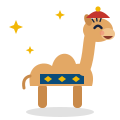

AO17 CS курсы / Бота әлемі

Бота әлемі
Ботаны Python кодымен жүргіз: дала торында алға жүреді, бұрылады, алма жинайды, тауды айналып өтіп, киіз үйге жетеді. 16 деңгей: қарапайым тізбектен лабиринт алгоритміне дейін. Кейбір деңгейде бірнеше әлем бар, ал код бәрінде жұмыс істеуі керек.
Ctrl + Enter - іске қосу. Tab - шегініс. Түйме команданы курсор тұрған жерге қояды.
Деңгей
Кеңес
Себет: 0 Әрекет: 0
Командалар
Қазақша және ағылшынша атаулар бірдей жұмыс істейді. Оңға бұрылатын команда әдейі жоқ: оны өзің функция етіп жазасың.
| Қазақша | Ағылшынша | Не істейді |
|---|---|---|
алға() | move() | бір шаршы алға |
солға() | turn_left() | орнында 90° солға бұрылу |
ал() | pick() | тұрған шаршыдан бір алма алу |
қой() | put() | себеттен бір алма қою |
алды_бос() | front_is_clear() | алдында тау не шекара жоқ па |
сол_бос() | left_is_clear() | сол жағы бос па |
оң_бос() | right_is_clear() | оң жағы бос па |
алма_бар() | on_apple() | тұрған шаршыда алма бар ма |
үйде() | at_home() | Бота киіз үйде ме |
себет() | bag() | себеттегі алма саны |
Неге бірнеше әлем?
Бір әлемге арнап «үш алға, бір солға» деп жаттап жазуға болады. Бірақ бағдарлама бір мысалға емес, көп жағдайға арналады. Сондықтан кей деңгейде екі-үш әлем бар: код олардың бәрінде өтуі керек. Бұл - тесттің мәні (курстың 8-аптасы): бағдарлама бір мысалда емес, түрлі кірісте тексеріледі.
Жұлдыз кодтың қысқалығына беріледі. Функция мен цикл кодты қысқартады: бірдей әрекетті қайта жазудың орнына оған ат береміз. Бір жолға нүктелі үтірмен тығыздау ұтыс бермейді - әр команда бөлек саналады.